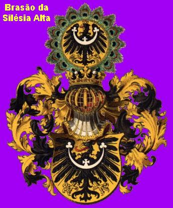
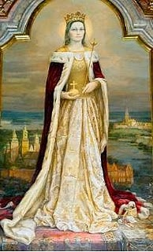
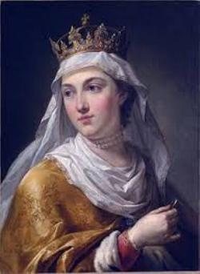
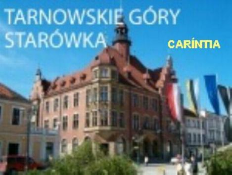

"ALMA PREDESTINADA"
UM POUCO DE HISTÓRIA
No ano de 1174 a Europa estava
dividida em principados e ducados, onde os senhores feudais eram donos absolutos
de seus territórios, eram
muito poderosos e ricos, e arrendavam as suas terras
aos camponeses, exigindo boa parte da colheita.
E pelo fato de serem donos
absolutos, eram orgulhosos e cheios de vaidades. As guerras aconteciam com
frequência entre os principados, frutos dos maus entendimentos, da inveja, do
ódio e da vingança que existia entre eles.
Nesta época nasceu Edwiges, na
Europa Central, numa montanhosa região denominada Silésia, próxima a Polônia.
Seu pai era Bertoldo de Andech, Marquês de Meran, Conde do Tirol, Duque da
Caríntia e da Ístria, e sua mãe, era Inês, filha do Conde Rottech. Na realidade
Edwiges era a oitava filha do casal, cujos sete primeiros filhos, quatro homens
e três mulheres, se tornaram pessoas ilustres e de renome ao longo dos anos,
estando inseridos na história do país. É assim que o filho mais velho tinha
também o nome de Bertoldo, igual ao do pai, foi Patriarca da Aquiléia; Ekelberto
foi Bispo de Bamberg; Oto e Henrique seguiram a carreira militar. Uma das filhas
casou-se com Felipe, Rei da França, a segunda filha se casou com André, Rei da
Hungria e foi mãe de Santa Isabel da Hungria; e a terceira filha tornou-se
religiosa e foi Abadessa Beneditina em Kicing.
Então, o casal Bertoldo e Inês
já contava em seu lar com magníficas crianças, e agora, a esposa Inês estava
sendo submetida a um trabalho de parto. E apesar de possuírem sete filhos,
Bertoldo estava nervoso e impaciente, ansioso pela chegada do novo membro da
família e, o restabelecimento de sua querida esposa Inês.
Nasceu enfim o oitavo filho do
casal, uma linda e loira duquesinha, que foi Batizada na Capela do Palácio e
recebeu o nome de Edwiges.
COSTUME DA ÉPOCA
 A menina Edwiges cresceu
com todos os cuidados e carinhos paternos, sempre acompanhada dos irmãos e das
criadas que não a deixavam em nenhum momento. Inês era uma mãe solícita e
preocupada, diariamente reunia os seus filhos e lhes ensinava a rezar, a
conhecer DEUS, JESUS o FILHO DE DEUS, e a VIRGEM MARIA, SANTÍSSIMA MÃE DO FILHO
DE DEUS e Nossa Mãe. Prendia a atenção dos filhos contando-lhes lindas histórias
das vidas dos Santos e do heroísmo dos primeiros cristãos. Era um ambiente
sadio, onde se respirava piedade e santidade.
A menina Edwiges cresceu
com todos os cuidados e carinhos paternos, sempre acompanhada dos irmãos e das
criadas que não a deixavam em nenhum momento. Inês era uma mãe solícita e
preocupada, diariamente reunia os seus filhos e lhes ensinava a rezar, a
conhecer DEUS, JESUS o FILHO DE DEUS, e a VIRGEM MARIA, SANTÍSSIMA MÃE DO FILHO
DE DEUS e Nossa Mãe. Prendia a atenção dos filhos contando-lhes lindas histórias
das vidas dos Santos e do heroísmo dos primeiros cristãos. Era um ambiente
sadio, onde se respirava piedade e santidade.
Todavia, veio um momento de dura
provação para Edwiges, pois tinha completado seis anos de idade, e de acordo com
o costume da época, nesta idade, a criança era internada num Mosteiro para ser
educada pelas religiosas. Ela sentiu muito a separação dos pais e irmãos, foi
uma ausência dolorida e triste, o seu coração chorava a saudade dos entes
queridos.
Foi internada no Mosteiro de
Kicing, onde mais tarde uma de suas irmãs seria Abadessa. Com as religiosas do
Mosteiro aprendeu as Sagradas Escrituras e os ensinamentos do SENHOR para a
vida. Na realidade, era apenas uma criança de seis anos de idade, mas que se
portava com uma impressionante dignidade, como se fosse uma pessoa de maior
idade. E
esta conduta a levou alcançar uma notável piedade, que nos seus doze anos de
idade, já revelava uma maturidade adulta e vigorosa, sedimentada na razão, no
direito, na justiça e no amor fraterno.
CASAMENTO
Completada a idade de 12 anos,
seu pai arranjou-lhe um noivo, e o escolhido foi Henrique, Duque da Silésia e
mais tarde também Duque da
Polônia. Ele quando viu Edwiges ficou deslumbrado
diante daquela beleza pura e sem adereços. E na verdade, Henrique ficou ainda
mais entusiasmado na sequência dos encontros, quando os dois conversavam
longamente no Palácio, tendo ele a oportunidade de também conhecer o espírito e
o coração de Edwiges, que o cativou definitivamente. Henrique ficou inteiramente
apaixonado por sua noiva.
O casamento foi marcado e se
realizou na metade do ano 1186. Foi um acontecimento magnífico, com muita pompa,
em que todos os parentes estavam presentes reunindo a nobreza e gente importante
da Europa, trajando elegante indumentária e com rara beleza. No momento da
celebração Edwiges estava séria, compenetrada na grandeza daquele importante
momento que ia delinear um novo rumo a sua vida, na imensidão misteriosa do
tempo da sua existência. E assim, esforçando-se para que as lágrimas não
brotassem de seus lindos olhos azuis, pronunciou o “sim”, que a
uniu a Henrique como seu marido, até que a morte os separe. Esta foi a única
vez em que se viu a Duquesa com um vestido especial para a cerimônia, com coroa
e os cabelos preparados, assim como uma medalha de NOSSA SENHORA num cordão
de ouro, presente da sua mãe.
NO NOVO LAR
Deixou o Palácio de seus pais em
Andech e seguiu de carruagem com seu marido e comitiva, para o novo lar no
Ducado de Henrique. Foi recebida com muita festa e curiosidade por todo o
pessoal: parentes, administradores e gente do povo.
No outro dia, bem cedo, já
estava de pé, andando pelas dependências do Palácio e assumindo a sua posição
de dona da casa, procurando organizar e administrar conforme o seu desejo:
distribuindo tarefas, estabelecendo horários e, sobretudo, tratando todos com
muito respeito. A verdade é que com a chegada de Edwiges entrou no Palácio os seus
conhecimentos e a sua educação, que exercitou atenciosamente, tudo o que aprendeu
com sua mãe e no seu tempo de Mosteiro. E assim que, determinou hora para tudo, para
o trabalho e para o descanso, para o lazer e primordialmente para as orações. E para
dar o exemplo, ela fazia questão de rezar com o pessoal que estava ao seu serviço,
transformando aquelas pessoas numa autêntica e competente família dentro da
igreja doméstica do seu lar, que era o seu palácio. Particularmente, Edwiges
também tinha o hábito de dedicar muitas horas do dia à oração e à meditação.
Sentia uma felicidade imensa naqueles momentos, sobretudo por que sentia a
presença de DEUS no seu coração e na sua vida. Desse modo um espírito de
fervor religioso encheu todo o palácio e todos estavam felizes com a
nova patroa.
MÃE COM APENAS 13 ANOS
O casal viveu uma perene lua de
mel, amando-se e respeitando-se mutuamente, cultivando um amor sincero e
dedicado, em todas as ocasiões. E por isso também, num clima de piedade ela
aguardava a chegada do seu filho primogênito. Rezava sempre com fervor e
atenção; rezava por ela, rezava pela criança que ia nascer e rezava pelo bom e
atencioso marido que DEUS tinha colocado em sua vida. Assim passavam os seus
dias, até que afinal chegou o grande dia. No palácio de Breslau, a capital da
Silésia, onde residiam, reinava grande expectativa. A alegria foi geral quando
foi anunciado:
- “A senhora
Duquesa da Silésia e da Polônia acaba de dar à luz uma criança. É um menino e
todos passam bem.”
O pai, o Duque Henrique, falou:
- “O nome dele será
Henrique, como é o meu nome. Eu e a Edwiges já combinamos assim!”
Este foi o primeiro filho da
Duquesa Edwiges, de uma série de seis filhos. E desse modo, na sequência dos
anos, nasceram: Conrado, Boleslau, Inês, Sofia e Gertrudes.
VIDA MATRIMONIAL

Antes de abordarmos diretamente este assunto, se faz necessário relembrar a infância
de Edwiges: foi criada pelos pais num ambiente cristão, com o permanente exercício
das orações e um crescente conhecimento de DEUS pelos ensinamentos da sua mãe. Como
era comum naquela época, foi mandada para o Mosteiro aos seis anos de idade, ou seja,
ainda uma verdadeira criança, sem qualquer maldade, e com o seu coração dirigido
fervorosamente a DEUS. As crianças eram entregues aos religiosos para
desenvolver os seus conhecimentos cristãos e ganhar um aprimoramento no correto
exercício da fé. E Edwiges nunca perdeu uma oportunidade, por menor que fosse,
para melhorar o seu conhecimento de DEUS e buscar outras maneiras, inovando
atitudes para agradar ao SENHOR e a Nossa MÃE SANTÍSSIMA.
Ela se casou com Henrique por
amor, pois verdadeiramente gostava muito dele e também era honesta e fielmente
amada pelo seu esposo. Queria tão bem a ele, que imaginou na pureza de sua
mente, colaborar e contribuir para que os seus filhos, gerados num convívio de
extremosa doação amorosa mútua, não fossem maculados ou atingidos pelos pecados
do mundo. Por essa razão, durante o período da gravidez, combinava com Henrique,
para que juntos o casal fizesse abstinência sexual até o nascimento da criança,
rezando mais para DEUS NOSSO SENHOR proteger a sua família. E seu marido,
respeitosamente concordou, compreendendo o carinho e a boa intenção da sua
esposa. Na mente do casal, todo sacrifício devia ser realizado, para que os seus
filhos nascessem fortes e protegidos pela graça de DEUS.
O sacramento do matrimônio
outorga ao casal direito absoluto de posse mútua. O SENHOR falou:
“Por isso um homem deixa seu pai e sua mãe,
se une a sua mulher, e eles se tornam uma só carne”.
(Gn 2, 24) Uma só carne quer nos lembrar, uma única vontade, uma prodigiosa harmonia
vivencial e, sobretudo, uma profunda e verdadeira fidelidade. Significa dizer que embora
existindo Normas e Padrões de Vida adaptados a cada época, o casal em busca da
felicidade e do engrandecimento do amor, pode na vida matrimonial estabelecer
para ambos outros procedimentos e atitudes, muito embora estas atitudes e
procedimentos, não sejam acolhidos e nem cultivados por outros casais.
E pensando assim, Edwiges e
Henrique, se amando com todas as forças do coração, como forma de agradecimento
pelas graças que recebiam do SENHOR e ainda, como prova de seu incandescente e
ardoroso amor a DEUS, quiseram também cultivar o severo sacrifício da
abstinência sexual durante muitas ocasiões de sua existência, além daquela
abstinência sexual praticada no período de cada gravidez.
Viveram assim, desse modo
honesto e preocupado, exercitando um amor corajoso, fiel e repleto de sacrifício
durante trinta anos, até a morte de Henrique.
OS FILHOS DO CASAL
Edwiges e Henrique procuraram
educar os seus filhos com sólida piedade, com um amplo conhecimento de DEUS,
preparando-os a receber a
imensidão de graças que diariamente o SENHOR derrama
sobre a humanidade de todas as gerações. O casal buscou infundir no coração dos
seus filhos os princípios das virtudes, o exercício da fidelidade e o amor
sincero, sem limites. Fizeram do palácio uma verdadeira e praticante Igreja
Doméstica, em que o exemplo dos pais iluminava o cotidiano e determinava uma
grandiosa harmonia em toda a família.
Mas, nem tudo saiu como
desejavam, eles tiveram muitas e grandes decepções. As fraquezas do mundo,
representadas pela febre do dinheiro, do poder, a ganância de ter, de ser
grande, de possuir muitos domínios, derramou um amargo fel no delicado e
generoso coração de Edwiges e lançou uma profunda tristeza no espírito de
Henrique. Quase todos os seus filhos não resistiram às terríveis e abomináveis
investidas da tentação maldita do mundo.
O Pai Henrique, querendo ajudar
o filho Conrado, que tinha o apelido de Crespo, arranjou-lhe um casamento com a
filha do Duque da Saxônia e lhes deu como herança e presente de núpcias, as
terras de Lubex e de Lusacia. E para que não existissem ciúmes entre os irmãos,
por recomendação da sua esposa Edwiges, o Pai Henrique deu ao filho mais velho,
Henrique, as terras de Lessete e Wlatislávia.
Conrado, que tinha um gênio
irascível, ficou com inveja do irmão e por isso, concebeu um ódio terrível
contra ele, e de tal dimensão que movido por audácia diabólica, articulou uma
abominável e traiçoeira trama, conquistando habilmente a amizade dos poloneses
que eram hostis aos germânicos das terras de seu irmão Henrique. E assim,
reunindo poderoso exército marchou contra o próprio irmão.
Edwiges sofreu terrivelmente.
Rezava a todo instante e fazia duras penitências, suplicando a misericórdia de
DEUS, para que acontecesse a reconciliação entre os filhos. Mas no momento, os
seus pedidos não foram atendidos.
Então, Henrique organizou também
o seu exército e foi enfrentar o seu irmão Conrado. Foi uma luta terrível com
muitas mortes dos dois lados, mas Henrique venceu a guerra, e Conrado conseguiu
fugir indo se abrigar junto ao seu pai Henrique.
Vivendo nas terras do seu pai,
certo dia Conrado saiu para caçar. Todavia numa momentânea distração, foi
atacado por um animal feroz que o deixou em lastimoso estado, vindo a falecer
dias após. Por solicitação de sua irmã Gertrudes, que o amava muito, o corpo foi
levado para o Mosteiro de Trebnitz, onde ela era a Abadessa, e o seu irmão foi
sepultado na Capela do Mosteiro.
Edwiges ainda estava imersa em
abomináveis sofrimentos pela morte de outro filho, Boleslau, também morto numa
outra guerra, quando recebeu a
notícia do falecimento de Conrado. Foi um choque muito grande para ela, que sem
dúvida, fez aumentar muito mais as dores no seu carinhoso coração de mãe.


Próxima Página
Página Anterior
Retorna ao Índice